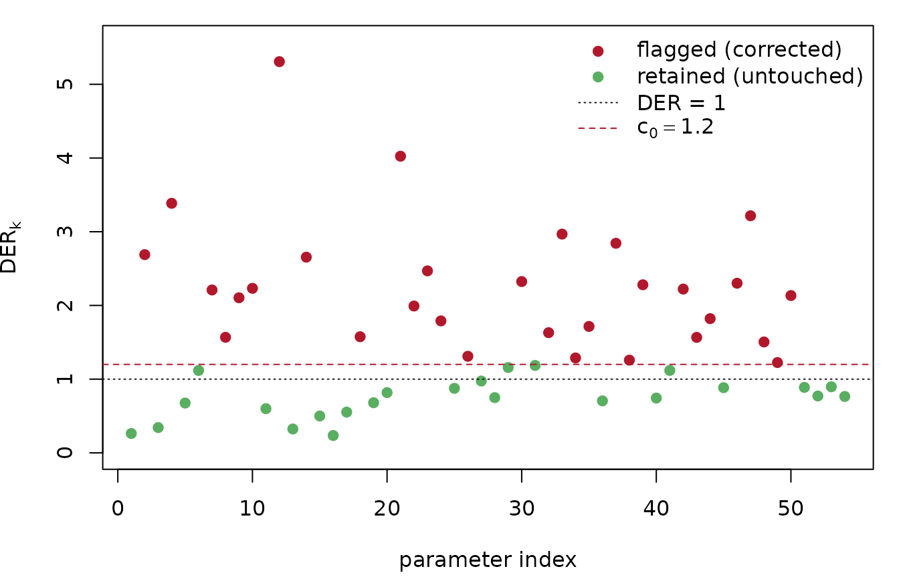

Classification and Selective Correction
JoonHo Lee
2026-07-04
Source:vignettes/theory-classification-correction.Rmd
theory-classification-correction.RmdOverview
This vignette is written for methodologists who want to understand
the step from diagnosis to action. The companion
vignettes vignette("theory-der") and
vignette("theory-decomposition") establish what the Design
Effect Ratio (DER) is and derive the closed-form expressions that
predict it. Here we take those per-parameter numbers as given and answer
two operational questions: which parameters should be corrected,
and how?
The DER of parameter k is \mathrm{DER}_k = \frac{[V_{\mathrm{target}}]_{kk}}{[\Sigma_{\mathrm{MCMC}}]_{kk}}, the ratio of the declared design-based sandwich variance to the model posterior variance. A single fitted model produces one such number per parameter, and those numbers can span two orders of magnitude. The task is to read them as a classification, not as a list to be blindly rescaled.
Two ideas here are standard, and two are the paper’s contribution. The weighted pseudo-posterior machinery is due to Savitsky & Williams (2022), and the joint post-processing correction that matches a model posterior to a design-based covariance is due to Williams & Savitsky (2021); those are the established antecedents. What is novel is (i) the four-tier map that reads each DER against the information source of the parameter it belongs to, and (ii) the selective block-Cholesky correction that applies the Williams–Savitsky transform to the flagged block only, so that shrinkage-protected and between-group-identified parameters are never disturbed.
We cover, in order:
- The four tiers — a table linking each parameter type to its information source, its predicted DER, and its default action.
- Tier III exclusion — why hyperparameters cannot be diagnosed by a data-level score meat, and where they surface in the output.
- The threshold c_0 — the default 1.2, its 20% margin, and its robustness.
-
The CCC algorithm — compute, classify, correct; the
flagged set and the block-Cholesky transform, tied to
der_correct(). - Why selective, not blanket — the concrete damage a uniform \sqrt{\mathrm{DER}} rescaling does to protected intervals.
- Rank-deficient flagged blocks and the nearest-PD fallback.
- A caveat on marginal versus joint credible regions.
The theorems that produce the predicted-DER column are recapped in a
single line below and derived in full in
vignette("theory-decomposition").
data(nsece_demo)
result <- der_compute(
nsece_demo$draws,
y = nsece_demo$y, X = nsece_demo$X,
group = nsece_demo$group, weights = nsece_demo$weights,
cluster = nsece_demo$psu, # design PSUs: the aggregation unit
family = "binomial",
sigma_theta = nsece_demo$sigma_theta,
param_types = nsece_demo$param_types
)
result <- der_classify(result, tau = 1.2, verbose = FALSE)The four tiers
Every parameter in a hierarchical survey model belongs to exactly one of four tiers. The tier is determined not by the size of the DER but by the information source of the parameter — where its identifying variation comes from — and this source is precisely what governs whether the survey design can inflate its posterior variance. The decomposition theorems make this exact: each tier has a closed-form predicted DER (balanced Gaussian, common design effect), which we recap in the final column.
| Tier | Parameter type | Information source | Predicted DER | Default action |
|---|---|---|---|---|
| I-a | Within-group fixed effects | Within-group variation only | \mathrm{DEFF} | Primary correction candidates; correct when flagged |
| I-b | Between-group fixed effects | Between-group contrasts only | \mathrm{DEFF}(1-B) | Usually below threshold; monitor |
| II | Random effects \theta_j | Both layers (prior + data) | B \cdot \mathrm{DEFF} \cdot \kappa(J) | Rarely need correction under the model-group target |
| III | Hyperparameters outside \boldsymbol\phi=(\boldsymbol\beta,\boldsymbol\theta) | Outside the declared location-block target | Undefined | Excluded by construction |
The information-source logic runs tier by tier.
Tier I-a — within-group fixed effects. A covariate that varies only within groups is identified entirely from contrasts among units in the same group. The survey design induces correlation among exactly those same-group units, and the random-effect prior on \theta_j shifts the group level but cannot absorb within-group correlation. So a Tier I-a coefficient is fully exposed: its DER equals the Kish design effect, \mathrm{DEFF}. These are the parameters most likely to be flagged, and the primary reason the diagnostic exists.
Tier I-b — between-group fixed effects. A group-level covariate, or one that varies only between groups, is identified from inter-group contrasts. That between-group information is diffuse in the very prior that shrinks the group effects, so shrinkage shields the coefficient by a factor (1-B): its DER is \mathrm{DEFF}(1-B). Even when \mathrm{DEFF} is large, a Tier I-b DER commonly sits below the correction threshold.
Tier II — random effects. Each \theta_j draws information from both layers: within-group data through the error variance and between-group structure through the prior. Shrinkage governs the exposure, and the marginal DER factors as B \cdot \mathrm{DEFF} \cdot \kappa(J), where \kappa(J)\to 1 as the number of groups grows. Strong shrinkage (small B) protects the group effect from design inflation. Under a model-group target, random effects rarely need correction.
Tier III — hyperparameters. Treated separately below.
# The realized tier of every parameter (Tier III lives in $excluded, see below)
tidied <- tidy(result)
table(tidied$tier)
#>
#> I-a I-b II
#> 1 2 51Key insight. The tier is a property of the parameter, fixed before any data value of the DER is seen; the DER then either confirms exposure (I-a flagged) or confirms protection (I-b and II typically retained). A large DEFF does not imply that every parameter needs correcting — only the ones whose information source leaves them exposed.
On the demo, the intercept beta[1] (Tier I-b) has DER
0.263, the within-group poverty covariate beta[2] (Tier
I-a) has DER 2.689 and is flagged, and the between-group
beta[3] (Tier I-b) has DER 0.343. The two shielded fixed
effects sit far below 1; the exposed
one sits well above. This is the four-tier map doing its work.
Tier III: why hyperparameters are excluded
The declared variance target is a location-block target for \boldsymbol\phi = (\boldsymbol\beta^{\mathsf T}, \boldsymbol\theta^{\mathsf T})^{\mathsf T}, the fixed effects and random effects. Its meat is built from cluster totals of the observation-level score with respect to that block: J_c = \sum_h \frac{C_h}{C_h - 1} \sum_{c \in h} (\mathbf{t}_{hc} - \bar{\mathbf{t}}_h)(\mathbf{t}_{hc} - \bar{\mathbf{t}}_h)^{\mathsf T}, \qquad \mathbf{t}_{hc} = \sum_{(i,j)\in c} \tilde{w}_{ij}\,\nabla_{\boldsymbol\phi} \log f\!\left(y_{ij} \mid \mathbf{x}_{ij}^{\mathsf T}\boldsymbol\beta + \theta_j\right).
That scope statement is the reason variance components are Tier III, but the details differ by parameter.
- \sigma_\theta is a random-effect prior hyperparameter. It enters through the unweighted group-level density g(\theta_j \mid \sigma_\theta) rather than through the observation-level score for \boldsymbol\phi, so it has no cluster-aggregated score term in the declared meat.
- \sigma_e in a gaussian model is different: the observation likelihood does contain a dispersion score. svyder still excludes it because the declared diagnostic conditions on the plug-in \hat\sigma_e and constructs only the location-block sandwich for \boldsymbol\phi. Diagnosing dispersion uncertainty would require a different target.
The DER of a Tier III hyperparameter is therefore
undefined in this package — not large, not small. The
software makes this explicit rather than reporting a spurious number:
hyperparameters are reported in $excluded and are never
certified as correct.
result$excluded
#> param tier
#> 1 sigma_theta III
#> reason
#> 1 random-effect prior hyperparameter outside the data-level phi=(beta, theta) score block; DER undefinedNote. Excluding a hyperparameter from the DER diagnostic is not a claim that its posterior is calibrated. It is a scope statement: uncertainty in \sigma_\theta or \sigma_e is a Tier III matter to be addressed by profiling or fully multilevel variance-component methods, outside the parameter-level correction workflow. The DER framework diagnoses the location block \boldsymbol\phi conditional on the plug-in variance components.
The threshold c_0
Classification turns a continuous DER into a binary decision through
a single threshold. A parameter is flagged when \mathrm{DER}_k > c_0. The default is c_0 = 1.2 (the argument tau in
der_classify()), a deliberately conservative choice: it
leaves alone any parameter whose posterior variance is within
20% of the target. A parameter is corrected only when
the design demonstrably inflates its uncertainty by more than that
margin.
The 20% margin is defended by three robustness facts, all from the paper’s simulation and application (BUILD_SPEC Section 4c):
- The flagged set is stable across the wide sweep c_0 \in [0.8, 2.0] for the primary targets — the parameters that cross the threshold are the same ones regardless of where in that range the line is drawn.
- Across the tighter operational band c_0 \in [1.1, 1.6], 96.9% of per-replication flagging decisions are unchanged in simulation — the decision boundary sits in a sparsely populated region of the DER distribution, so moving it does little.
- At c_0 = 1.2 the simulated false-positive rate is about 2% — parameters with no genuine design inflation are seldom flagged.
der_sensitivity() sweeps the threshold and reports how
the flagged count moves, so the stability is verifiable on any fitted
model rather than taken on faith.
sens <- der_sensitivity(result) # default grid: 0.8, 0.9, ..., 2.0
sens[, c("tau", "n_flagged", "pct_flagged")]
#> tau n_flagged pct_flagged
#> 1 0.8 40 0.7407407
#> 2 0.9 35 0.6481481
#> 3 1.0 34 0.6296296
#> 4 1.1 34 0.6296296
#> 5 1.2 30 0.5555556
#> 6 1.3 27 0.5000000
#> 7 1.4 26 0.4814815
#> 8 1.5 26 0.4814815
#> 9 1.6 22 0.4074074
#> 10 1.7 21 0.3888889
#> 11 1.8 19 0.3518519
#> 12 1.9 18 0.3333333
#> 13 2.0 17 0.3148148Read the middle of this table. Around the default the flagged count changes slowly with the threshold — 34 at c_0 = 1.1, 30 at 1.2, 27 at 1.3 — so the diagnostic’s verdict is not an artifact of the exact cutoff. The plateau at 26 across c_0 \in [1.4, 1.5] is the same kind of flat region: the DER distribution is thin there. A jittered threshold would move the count by a parameter or two, not reorder the conclusion.
Key insight. A good threshold sits in a valley of the DER distribution, not on a slope. The near-flat middle of the sensitivity table is the empirical signature that c_0 = 1.2 separates a well-defined exposed set from a well-defined protected set, rather than slicing through a dense cluster of borderline parameters.
The compute–classify–correct algorithm
The workflow is the paper’s Algorithm 1, the compute–classify–correct (CCC) loop.
Step 1 — Compute. Form the target and the posterior
covariance and take the diagonal ratio, one DER per parameter: V_{\mathrm{target}} \gets H^{-1} J_c H^{-1}, \qquad
\Sigma_{\mathrm{MCMC}} \gets \widehat{\mathrm{Var}}(\text{draws}),
\qquad \mathrm{DER}_k \gets
\frac{[V_{\mathrm{target}}]_{kk}}{[\Sigma_{\mathrm{MCMC}}]_{kk}}.
This is der_compute().
Step 2 — Classify. Apply the threshold to form the
flagged set \mathcal F = \{\,k :
\mathrm{DER}_k > c_0\,\}. This is der_classify(),
and it also assigns each parameter its tier and pins Tier III into
$excluded.
Step 3 — Correct. Rescale the posterior draws of the
flagged block so that its covariance matches the target on that block,
and leave everything else alone. Writing \hat{\boldsymbol\phi}_{\mathcal F} for the
posterior mean of the flagged parameters and \boldsymbol\phi_{\mathcal F}^{(s)} for draw
s, the block-Cholesky transform maps
each draw through \boldsymbol\phi_{\mathcal
F}^{*(s)} = \hat{\boldsymbol\phi}_{\mathcal F} + R_2
R_1^{-1}\!\left(\boldsymbol\phi_{\mathcal F}^{(s)} -
\hat{\boldsymbol\phi}_{\mathcal F}\right), with the two Cholesky
factors R_1 =
\mathrm{chol}\!\left(\Sigma_{\mathrm{MCMC}}[\mathcal F, \mathcal
F]\right), \qquad R_2 =
\mathrm{chol}\!\left(V_{\mathrm{target}}[\mathcal F, \mathcal
F]\right). By construction the corrected block has covariance
exactly V_{\mathrm{target}}[\mathcal F,
\mathcal F]: the map R_2
R_1^{-1} sends a cloud with covariance \Sigma_{\mathrm{MCMC}}[\mathcal F,\mathcal F] = R_1
R_1^{\mathsf T} to one with covariance R_2 R_2^{\mathsf T} = V_{\mathrm{target}}[\mathcal
F,\mathcal F], so the flagged marginals and their mutual
dependence are matched at once. Posterior means are preserved because
the transform acts on the centred draws. This is
der_correct(method = "block_cholesky"), the default.
When exactly one parameter is flagged, |\mathcal F| = 1, the matrices are scalars
and the transform collapses to a marginal \sqrt{\mathrm{DER}} rescaling, \phi^{*(s)} = \hat\phi +
\sqrt{\tfrac{[V_{\mathrm{target}}]_{kk}}{[\Sigma_{\mathrm{MCMC}}]_{kk}}}\,\bigl(\phi^{(s)}
- \hat\phi\bigr) = \hat\phi + \sqrt{\mathrm{DER}_k}\,\bigl(\phi^{(s)} -
\hat\phi\bigr). In this single-flag case
method = "block_cholesky" and
method = "marginal" give bitwise-identical output; the
difference between them appears only when |\mathcal F| > 1, where
"marginal" rescales each flagged parameter independently
(matching marginals but not the off-diagonal structure) and
"block_cholesky" matches the full flagged covariance.
result <- der_correct(result, method = "block_cholesky")
# 30 flagged on this target; the within-group poverty covariate is one of them
sum(result$classification$flagged)
#> [1] 30
c(scale_beta2 = unname(result$scale_factors[2]),
sqrt_DER = sqrt(result$der[2]))
#> scale_beta2 sqrt_DER.beta[2]
#> 1.639952 1.639952The scale factor applied to beta[2] equals \sqrt{\mathrm{DER}}, exactly as the scalar
case predicts. The corrected draws are retrieved with
as.matrix(), and the crucial property is that unflagged
parameters are left bitwise untouched:
corrected <- as.matrix(result) # corrected draws
original <- result$original_draws
unflagged <- which(!result$classification$flagged)
# unflagged columns are byte-for-byte identical to the input
identical(corrected[, unflagged], original[, unflagged])
#> [1] TRUENote. “Bitwise untouched” is a deliberate design choice, not an approximation. The correction is a targeted intervention on \mathcal F; every parameter the diagnostic did not flag keeps its original posterior draws exactly, so nothing the model got right is disturbed.
Why selective, and not blanket
The reason the correction is confined to \mathcal F is that the alternative — a blanket correction that applies \sqrt{\mathrm{DER}_k} to every parameter’s marginal variance — is actively harmful. For a protected parameter with \mathrm{DER}_k < 1, the factor \sqrt{\mathrm{DER}_k} < 1 narrows an interval that the model deliberately made narrow through hierarchical shrinkage. Blanket correction thus destroys exactly the shrinkage protection that Tiers I-b and II were relying on.
The paper quantifies the damage on the NSECE application and in simulation (BUILD_SPEC Section 4c). A blanket correction toward the (rank-deficient) state-level target would rescale 53 of 54 parameters, with a mean interval width ratio of 0.26 and a worst case of 0.04 — intervals shrunk to a quarter of their width on average, and to one twenty-fifth in the worst case. Under simulation the consequence is measurable in coverage: blanket correction collapses the coverage of unflagged random effects from a nominal \approx 90\% to between 11% and 37%. Selective correction leaves those same parameters at their original, well-calibrated draws.
The following visualizes the two policies on the demo. Selective correction moves only the flagged block; blanket correction would drag every parameter toward its own \sqrt{\mathrm{DER}}, pushing the many \mathrm{DER} < 1 parameters to the left of the \mathrm{DER}=1 line and narrowing their intervals.
op <- par(mar = c(4.2, 4, 1, 1))
der_vals <- result$der
flagged <- result$classification$flagged
cols <- ifelse(flagged, svyder_pal[["flag"]], svyder_pal[["II"]])
plot(seq_along(der_vals), der_vals, pch = 19, col = cols,
xlab = "parameter index", ylab = expression(DER[k]),
ylim = c(0, max(der_vals) * 1.05))
abline(h = 1.0, lty = 3, col = svyder_pal[["target"]]) # DER = 1
abline(h = 1.2, lty = 2, col = svyder_pal[["flag"]]) # threshold c0
legend("topright", bty = "n", pch = c(19, 19, NA, NA),
lty = c(NA, NA, 3, 2),
col = c(svyder_pal[["flag"]], svyder_pal[["II"]],
svyder_pal[["target"]], svyder_pal[["flag"]]),
legend = c("flagged (corrected)", "retained (untouched)",
"DER = 1", expression(c[0] == 1.2)))
par(op)Points below the dashed threshold line are the parameters a blanket policy would needlessly rescale. Everything below the dotted \mathrm{DER}=1 line would be narrowed by blanket correction — the visible harm the selective policy avoids.
Key insight. The DER is signed information. \mathrm{DER}_k > 1 says “widen me”; \mathrm{DER}_k < 1 says “leave me — I am already wider than the design target because shrinkage protects me.” A blanket correction reads only the magnitude and ignores the sign, so it corrupts precisely the parameters the hierarchy was designed to stabilize. Selectivity is what respects the sign.
Rank-deficient flagged blocks
The target’s meat has rank at most the number of clusters, because J_c is a sum of that many rank-one cluster contributions. When the flagged set grows large — |\mathcal F| approaching the number of clusters, as it can when many random effects are flagged under a design-PSU target — the flagged sub-block V_{\mathrm{target}}[\mathcal F, \mathcal F] may fail to be positive definite, and its Cholesky factor R_2 does not exist.
The software handles this by substituting the nearest
positive-definite matrix (Higham, 2002, via
Matrix::nearPD) for the offending block, factoring that
instead, and issuing a warning so that the correction is flagged as
approximate. The diagonal DER values themselves remain well
defined throughout — the diagonal of V_{\mathrm{target}} never requires the full
block to be invertible — so classification is unaffected; it is only the
joint rescaling of a rank-deficient flagged block that is
approximated.
Note. The nearest-PD substitution is a last-resort numerical guard, and its use is surfaced to the analyst rather than hidden. If it triggers, the flagged block is close to the boundary of what the target can support jointly, which is itself worth knowing: it usually signals that the flagged set has grown to the scale of the cluster count under the chosen aggregation unit.
A caveat: marginal versus joint credible regions
The block-Cholesky correction targets marginal calibration of the flagged parameters: after correction, each flagged parameter’s posterior variance and the flagged block’s mutual covariance match the design-based target. That is the right object for reporting corrected marginal intervals, and for joint intervals that lie entirely within \mathcal F.
It is not, however, a full joint recalibration across the whole parameter vector. A joint credible region that spans both flagged and unflagged parameters — for instance a confidence ellipse for a flagged fixed effect together with an unflagged one — requires the complete joint correction of Williams & Savitsky (2021), which recalibrates the entire posterior covariance rather than one block. In that setting the DER is best read as the interpretive layer: it tells you which parameters are driving the design sensitivity and why, while the full-covariance Williams–Savitsky transform does the joint rescaling. The two are complementary — DER for diagnosis and selective marginal action; the full joint correction when the inferential target is a region spanning the flagged/unflagged boundary.
Note. In the common case where the deliverable is a table of corrected per-parameter intervals — as in most applied survey reports — marginal calibration of the flagged set is exactly what is required, and the selective correction is complete on its own. The joint caveat matters only when the inference is genuinely multivariate across the flagged/unflagged divide.
What’s next?
- For the definition of the DER, the three regimes (>1, \approx
1, <1), and the
information-source intuition that underlies the tiers, see
vignette("theory-der"). - For the derivation of the predicted-DER column — Theorem 1 (\mathrm{DEFF}\,(1-R_k)), Theorem 2 (B\cdot\mathrm{DEFF}\cdot\kappa(J)), and the
conservation law — and for empirical verification with
der_theorem_check()andder_decompose(), seevignette("theory-decomposition"). - For a hands-on, end-to-end run of
der_compute\toder_classify\toder_correcton the demo, including the equivalence check againstder_diagnose(), see the applied The Compute–Classify–Correct Pipeline.
References
Higham, N. J. (2002). Computing the nearest correlation matrix — a problem from finance. IMA Journal of Numerical Analysis, 22(3), 329–343.
Lee, J., Williams, M. R., & Savitsky, T. D. (2026). Design Effect Ratios for Bayesian Survey Models: A Diagnostic Framework for Identifying Survey-Sensitive Parameters. Journal of Survey Statistics and Methodology (submitted).
Savitsky, T. D., & Williams, M. R. (2022). Pseudo Bayesian mixed models under informative sampling. Journal of Official Statistics, 38(4), 901–928. https://doi.org/10.2478/jos-2022-0039
Williams, M. R., & Savitsky, T. D. (2021). Uncertainty estimation for pseudo-Bayesian inference under complex sampling. International Statistical Review, 89(1), 72–107. https://doi.org/10.1111/insr.12376